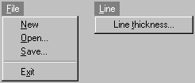
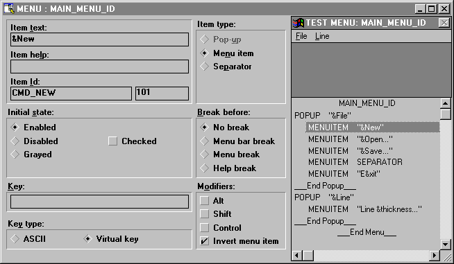
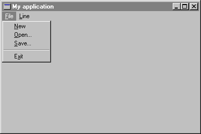
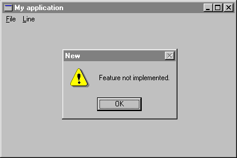

Step 7: Adding a menu
Most Windows applications have a menu on their main window to provide a variety of selections for the user. In this section, you will add a menu to the program. Figure 11 shows the menus that you will add.
Figure 11

Like dialog boxes, you have two ways to add a menu: using resources or writing Eiffel code. Once again, both solutions will be presented for the Professional and Personal users.
Method 1: Using resources
Resource editors provide a very easy way to design menus visually. For instance, Figure 12 shows Borland Resource Workshop's menu module.
Figure 12

After adding the menus in app.rc, the following text will be added to the file.
#define MAIN_MENU_ID 1#define CMD_NEW 101#define CMD_OPEN 102#define CMD_SAVE 103#define CMD_EXIT 104#define CMD_LINE_THICKNESS 105MAIN_MENU_ID MENU{POPUP "&File"{MENUITEM "&New", CMD_NEWMENUITEM "&Open...", CMD_OPENMENUITEM "&Save...", CMD_SAVEMENUITEM SEPARATORMENUITEM "E&xit", CMD_EXIT}POPUP "&Line"{MENUITEM "Line &thickness...", CMD_LINE_THICKNESS}}
The value of MAIN_MENU_ID, which identifies the menu, will be used in Eiffel to load the menu. Menu item identifiers (as CMD_NEW, CMD_OPEN) will be used to identify options selected by the user. Don't forget to update class APPLICATION_IDS using H2E since new identifiers have been added in the resource file.
Now, you need to add the following once function to load the menu:
main_menu: WEL_MENU is -- Window's menu once !! Result.make_by_id (Main_menu_id) end
Class APPLICATION_IDS needs to be added in the inheritance clause of MAIN_WINDOW to use Main_menu_id.
Method 2: Writing Eiffel code
If you can't use a resource editor, you have to create the menu using WEL_MENU's procedures as follows:
main_menu: WEL_MENU is
-- Window's menu
local
file, line: WEL_MENU
once
!! file.make
file.append_string ("&New", Cmd_new)
file.append_string ("&Open...", Cmd_open)
file.append_string ("&Save...", Cmd_save)
file.append_separator
file.append_string ("E&xit", Cmd_exit)
!! line.make
line.append_string ("Line &thickness...", Cmd_line_thickness)
!! Result.make
Result.append_popup (file, "&File")
Result.append_popup (line, "&Line")
end
Cmd_new: INTEGER is 101 Cmd_open: INTEGER is 102 Cmd_save: INTEGER is 103 Cmd_exit: INTEGER is 104 Cmd_line_thickness: INTEGER is 105
Basically, the function creates two popup menus (File and Line) and add them to the main menu. Procedure append_string expects two arguments which are an item name (STRING) and an unique identifier (INTEGER). Optional character "&" identifies the hot key of the option.
No matter which method you use, now you need to set the menu for the window in the MAIN_WINDOW's make routine as follows:
set_menu (main_menu)
Figure 13 shows the menu how it appears in the menu window.
Figure 13

At this point, choosing an option in the menu does not perform any task. In order to process menu commands, you have to redefine on_menu_command from WEL_COMPOSITE_WINDOW. This procedure has an INTEGER argument which identifies the option selected by the user (the same as you have specified in the resources or in main_menu function).
A very basic implementation of on_menu_command could be the following:
on_menu_command (menu_id: INTEGER) is -- menu_id has been selected. local msgBox: WEL_MSG_BOX do !! msgBox.make inspect menu_id when Cmd_new then msgBox.warning_message_box (Current, "Feature not implemented.", "New") when Cmd_open then msgBox.warning_message_box (Current, "Feature not implemented.", "Open") when Cmd_save then msgBox.warning_message_box (Current, "Feature not implemented.", "Save") when Cmd_exit then msgBox.warning_message_box (Current, "Feature not implemented.", "Exit") when Cmd_line_thickness then msgBox.warning_message_box (Current, "Feature not implemented.", "Line thickness") end end
For instance, if you choose option New in the File menu, Figure 14 shows what you will get.
Figure 14

To make things more interesting, the application will process New option as it should be: Delete all the lines and forces a repainting of the screen. Since there are no lines to redraw, the screen becomes blank. Replace the call to warning_message_box by the following code:
when Cmd_new then lines.wipe_out invalidate
It is easy to respond to the Exit selection by destroying the main window as follows:
when Cmd_exit then if closeable then destroy end
You can also move the code from on_right_button_down which brings up line thickness dialog box to on_menu_command to respond to the Line thickness selection (identifier Cmd_line_thickness).